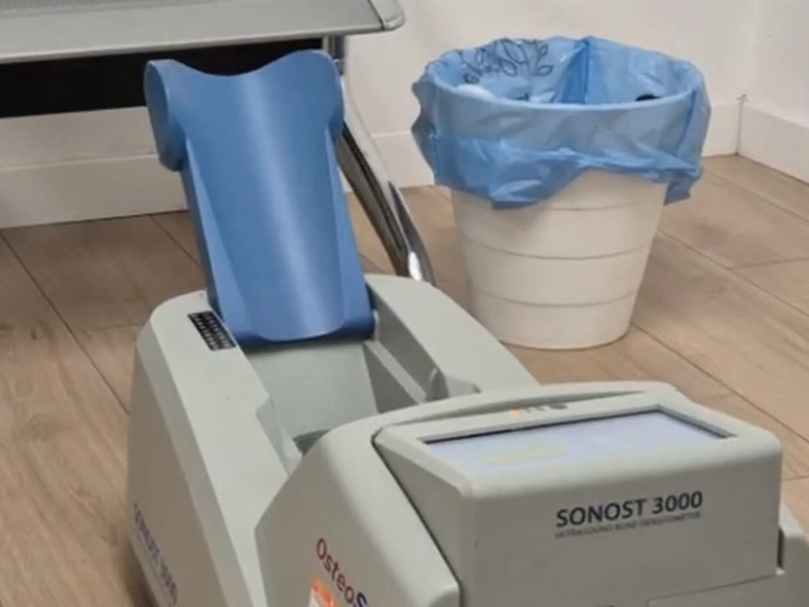
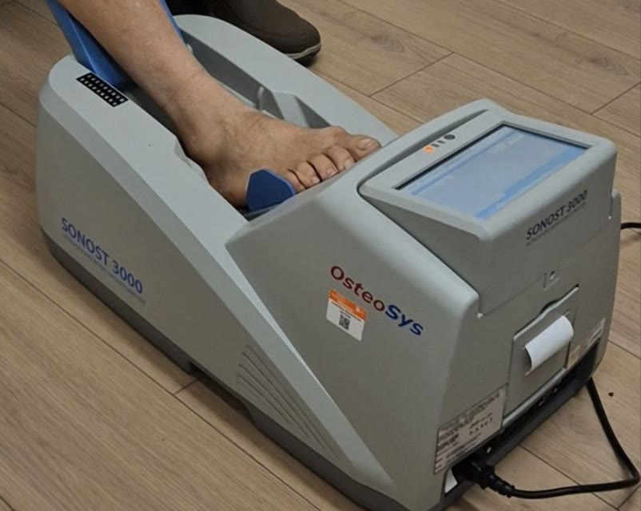
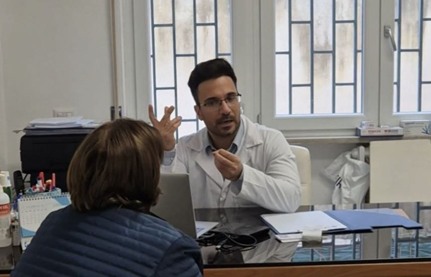

Un gradino mancato, una scivolata in bagno, una spinta in autobus. Per chi ha le ossa in salute finisce quasi sempre con un livido. Per chi ha l'osteoporosi può finire con un femore rotto, un intervento e mesi di recupero. Nel mio lavoro incontro spesso persone che non sapevano di avere le ossa fragili: l'hanno scoperto con la frattura.
Questo articolo serve a invertire l'ordine. Prima il controllo, poi, se serve, la cura, quando ci sono ancora più possibilità di evitare la frattura.
Cos'è l'osteoporosi
L'osteoporosi è una condizione in cui le ossa perdono densità, diventano più porose e quindi più fragili. L'osso non è un pezzo di pietra: è un tessuto vivo, che il corpo demolisce e ricostruisce di continuo. Fino ai 30-35 anni circa si costruisce più di quanto si perda. Poi l'equilibrio si sposta, e nelle donne dopo la menopausa la perdita accelera, perché calano gli estrogeni che proteggono l'osso.
Secondo il Ministero della Salute, in Italia ne soffrono circa 5 milioni di persone, per l'80% donne in post menopausa. Riguarda anche gli uomini, più tardi e più raramente, ma con lo stesso rischio di fratture.
Perché non te ne accorgi
L'osteoporosi non fa male. Le ossa si assottigliano per anni e tu continui a camminare, lavorare, fare le scale, senza sentire nulla. Il primo segnale, molto spesso, è la frattura.
Alcune fratture, quelle delle vertebre, sono quasi mute: un mal di schiena che si scambia per un colpo d'aria, e solo dopo anni ci si accorge di essere più bassi di qualche centimetro o di avere la schiena curva. Aspettare i sintomi, con questa malattia, vuol dire aspettare troppo.
Chi rischia di più
Non esiste un identikit unico, ma alcune situazioni aumentano il rischio:
- la menopausa, soprattutto se arrivata presto
- un genitore che si è rotto il femore
- essere molto magri
- poca vitamina D e poco calcio nella dieta
- il fumo e l'alcol in quantità
- una vita molto sedentaria
- l'uso prolungato di cortisone, e alcune malattie della tiroide o dell'intestino
Avere uno di questi fattori non significa avere l'osteoporosi, e non averne nessuno non ti mette al riparo. Per questo, dopo i 50 anni, il controllo ha senso anche se ti senti bene.

Cosa succede quando l'osso si rompe
Le fratture tipiche dell'osteoporosi sono quelle delle vertebre, del polso e del femore. Secondo l'International Osteoporosis Foundation, una donna su tre e un uomo su cinque dopo i 50 anni avrà nella vita una frattura da fragilità.
Quella del femore è la più seria. Quasi sempre si deve operare, il ricovero è lungo, e per il Ministero della Salute la mortalità a un anno dalla frattura è tra il 15 e il 25%. Anche chi supera bene l'intervento non sempre ritrova l'autonomia di prima: camminare da soli, uscire di casa, fare le scale. Una frattura da fragilità, poi, ne chiama spesso un'altra.
La prevenzione serve a questo. Non cura una frattura che c'è già: ti dà la possibilità di evitarla.
Hai più di 50 anni e non hai mai controllato le ossa? Il 13 novembre, dalle 9.00 alle 13.30, screening osteoporosi gratuito con MOC in Via Brindisi 12, a Scafati.
Prenota su WhatsAppLa MOC: come funziona il controllo
MOC significa mineralometria ossea computerizzata. Misura la densità dell'osso, cioè quanto minerale c'è nella sua struttura, e la confronta con i valori di riferimento. Il risultato è un punteggio che dice se l'osso è nella norma, se c'è una riduzione iniziale di densità (osteopenia) o se siamo nell'osteoporosi.
L'apparecchio che usiamo in studio lavora con gli ultrasuoni, quindi niente raggi X. Appoggi il piede, resti seduto, in pochi minuti l'esame è fatto e non senti nulla.

È un esame di screening. Se il risultato fa pensare a un rischio, lo approfondiamo con la visita e, se serve, con altri esami, come la densitometria ossea sulla colonna e sul femore. Solo il quadro completo permette di decidere se serve una terapia.
Cosa puoi fare ogni giorno
Nessun gesto da solo basta, ma insieme fanno una differenza concreta.
Muoviti con il peso del corpo: camminare a passo svelto, fare le scale, qualche esercizio di rinforzo muscolare. L'osso si rinforza quando viene stimolato. Nuoto e bicicletta fanno bene al cuore, ma stimolano meno le ossa.
Porta in tavola il calcio: latte e derivati, legumi, verdure a foglia verde, pesce con le lische. Per la vitamina D serve un po' di sole in modo sensato, e un integratore solo se lo decide il medico dopo averla misurata. Il fai da te qui non aiuta.
Se fumi, è un buon motivo in più per smettere. L'alcol, meglio poco.
E pensa alle cadute, perché sono quasi sempre la scintilla della frattura: togli i tappeti che scivolano, illumina bene le scale e il corridoio, usa scarpe chiuse in casa, controlla ogni tanto la vista.
Se dopo la visita serve una terapia con farmaci, la imposto io insieme al tuo medico di base, caso per caso. Non è mai una decisione da prendere da soli.
Quando fare una visita
Dopo i 50 anni, e in particolare per le donne dopo la menopausa, un controllo ha senso anche in assenza di sintomi. Conviene anticiparlo se ti sei già rotto un osso per un trauma lieve, se hai perso altezza, se hai un mal di schiena improvviso e importante, se in famiglia ci sono state fratture del femore o se prendi cortisone da tempo.

Non serve aspettare il dolore, perché con l'osteoporosi il dolore arriva tardi. Se il controllo è nella norma ti rassicura e ti dico quando ripeterlo. Se non lo è, hai il tempo di intervenire prima che l'osso ceda.
Fonti: Ministero della Salute, Osteoporosi; International Osteoporosis Foundation, Epidemiology of osteoporosis and fragility fractures.